››› Family-Owned · Spring Branch, TX
Forestry mulching, precision survey-line clearing, and site work across Central Texas — done with excellence, speed, and care.
Serving Spring Branch, Bulverde, New Braunfels, Canyon Lake, Boerne, San Antonio, San Marcos, the Texas Hill Country, and clients across Central Texas.
Land clearing done right
9 Arrow specializes in high-production forestry mulching with the best finish in the industry. From right-of-way maintenance to dirt work and waterline installation, our attention to detail increases the appearance, functionality, and value of every project.
We're a family-owned, Central Texas company that treats your land like our own — and we don't consider a job finished unless we're proud of the result.
Who We Are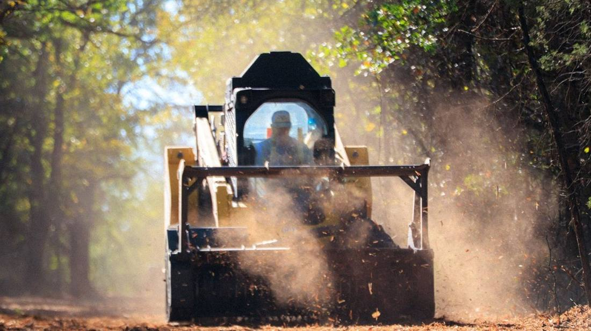
Our Services
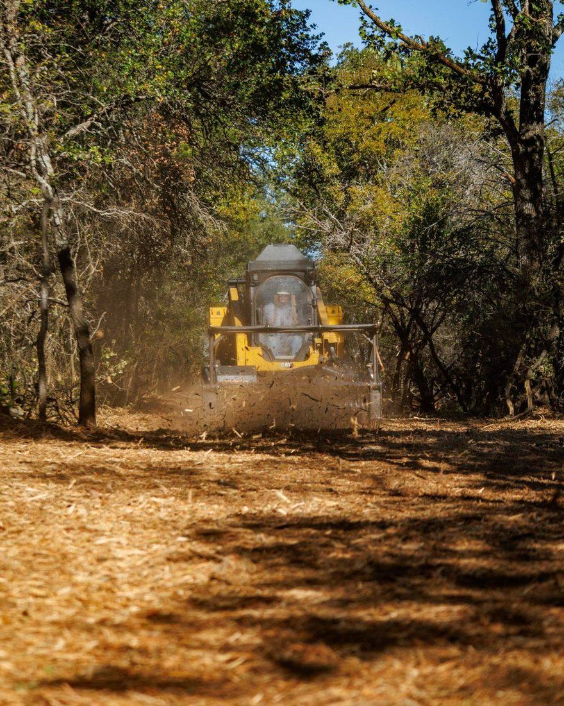
Service 01Grinds brush, cedar & mesquite in place — no burn piles, no hauling.
Explore this service ›››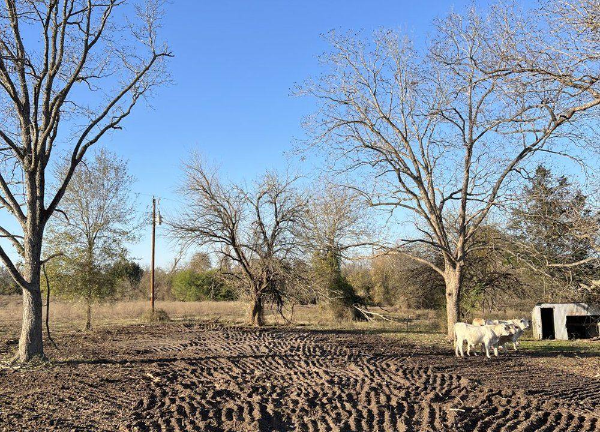
Service 02Forestry mulching, lot & brush clearing across Central Texas — no burn piles.
Explore this service ›››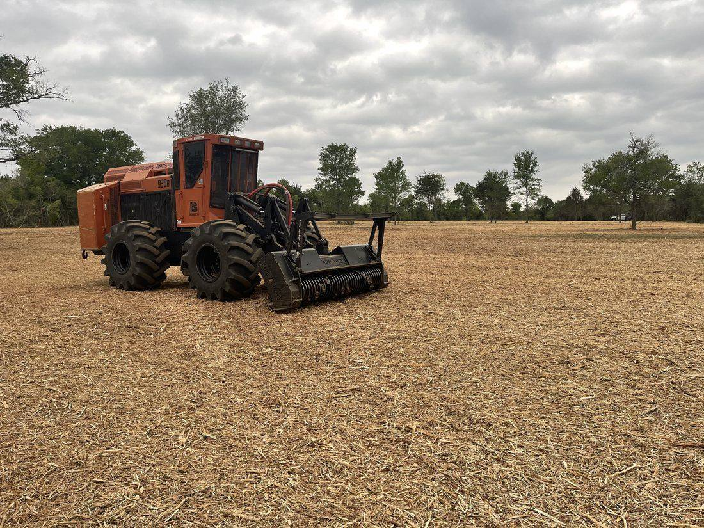
Service 03Mulch Ashe juniper in place — reclaim water, grass & Hill Country views.
Explore this service ›››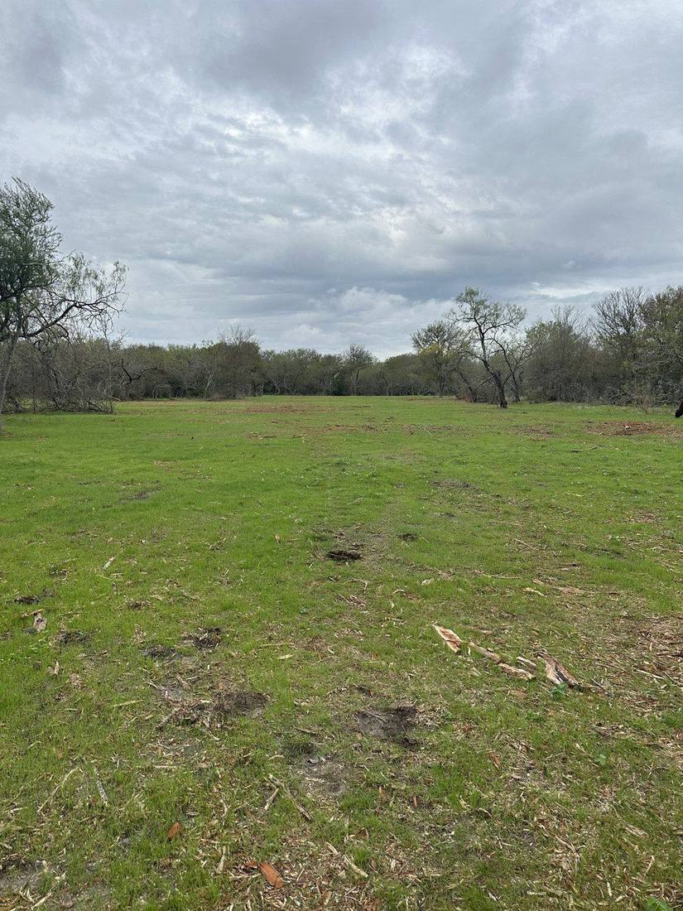
Service 04Reclaim overgrown lots & create defensible space — safely, no burning.
Explore this service ›››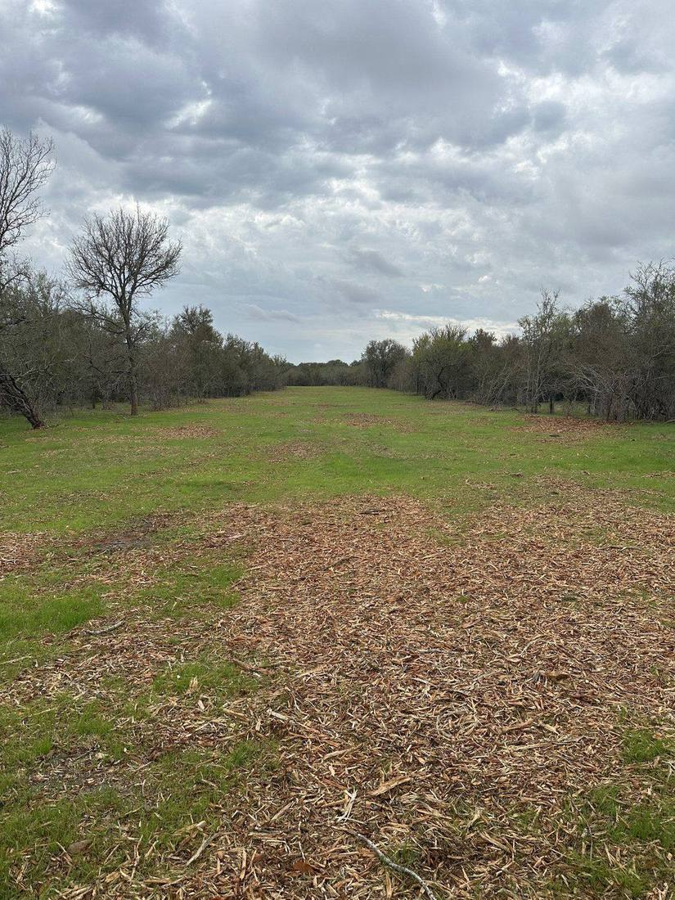
Service 05Cedar & mesquite removal and pasture restoration for grazing.
Explore this service ›››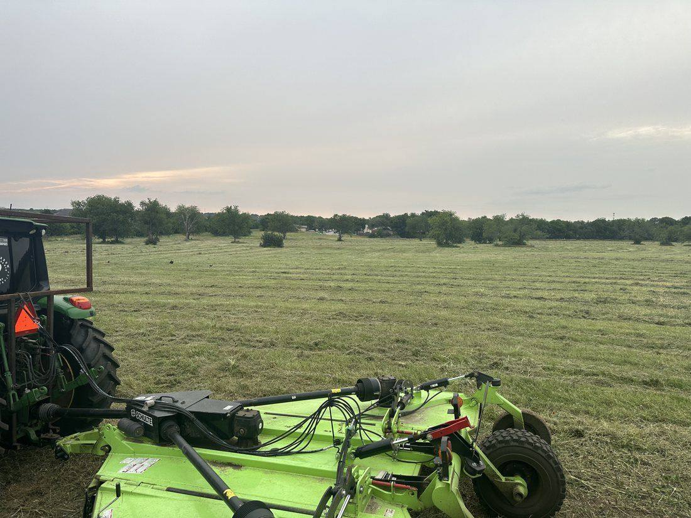
Service 06Trimble-guided clearing accurate to within a thousandth of a square foot.
Explore this service ›››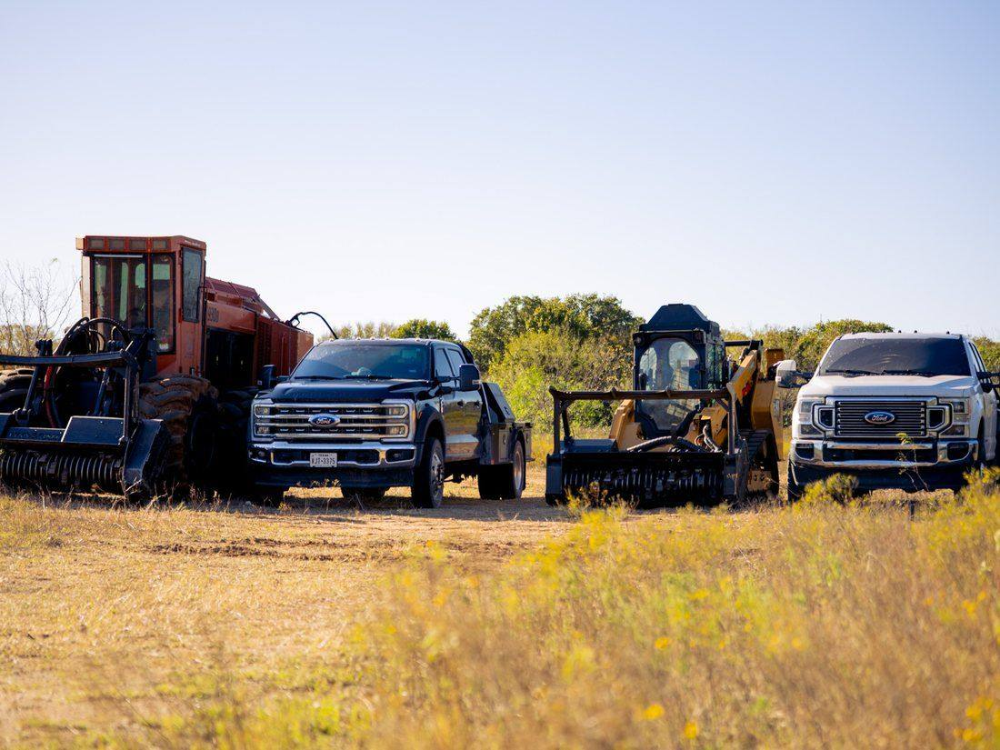
Service 07Wide compliant corridors for pipelines & power lines — first crew on site.
Explore this service ›››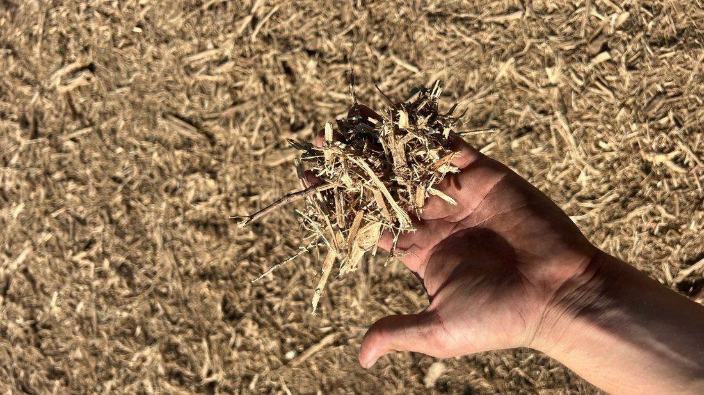
Service 08New entrances, culverts, creek crossings & graded road base.
Explore this service ›››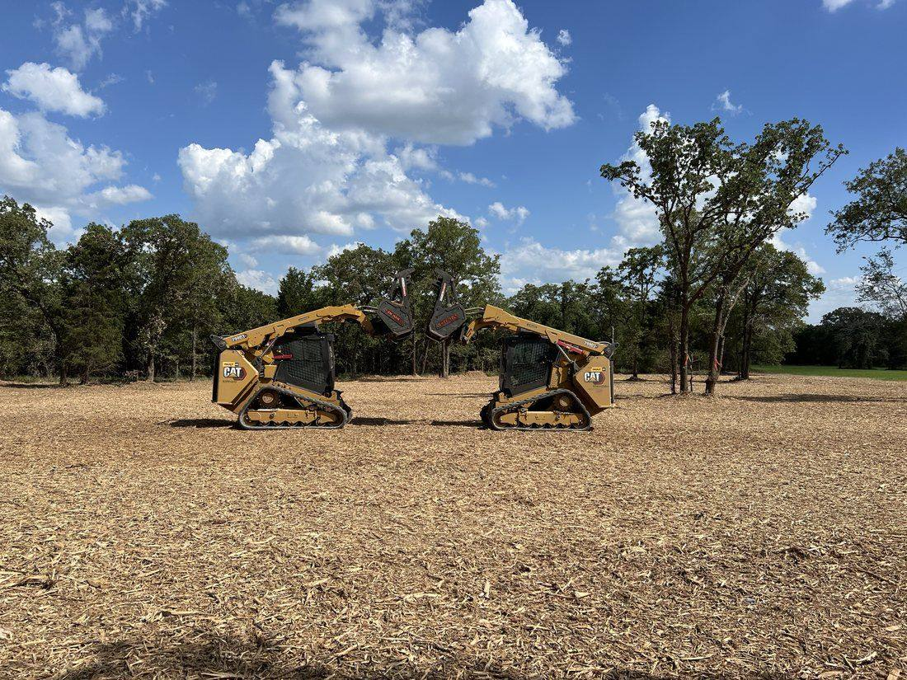
Service 09Clear & grade home sites, pads & building sites — construction-ready.
Explore this service ›››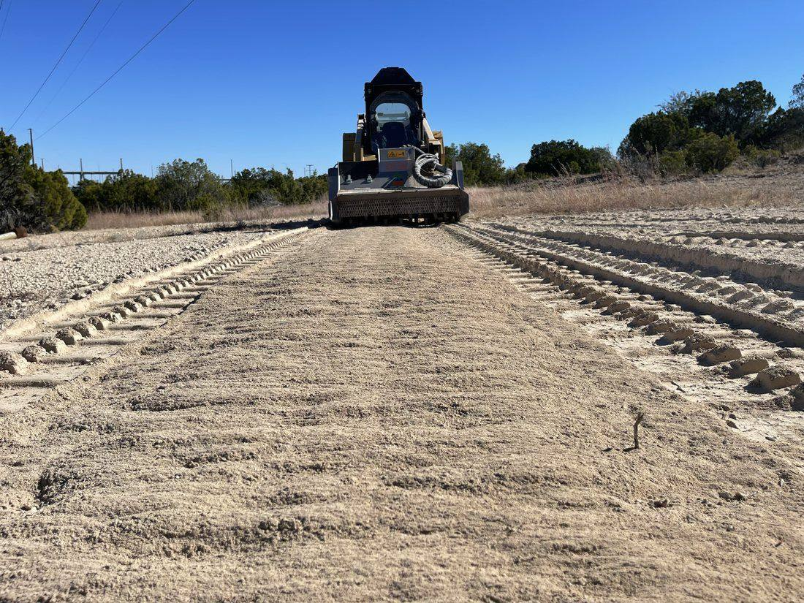
Service 10Grading, pad sites, creek crossings, trenching & waterline installation.
Explore this service ›››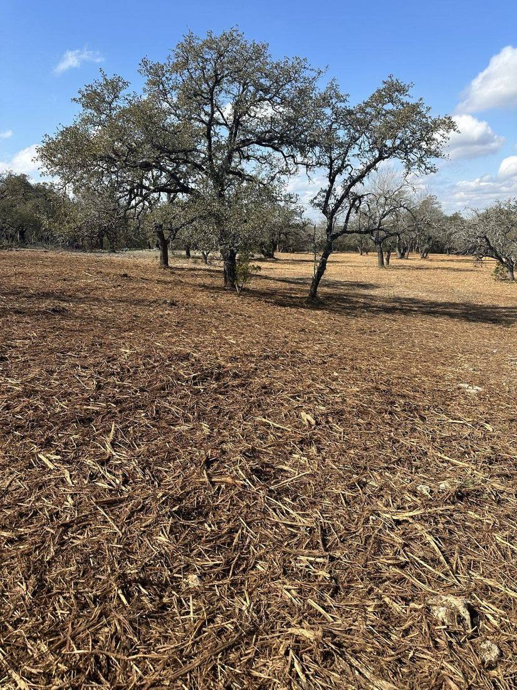
Service 11Mowing, shredding & ROW upkeep that keeps land safe and sharp.
Explore this service ›››This is the work
Sharp teeth. Big horsepower. Operators who care about the finish. The difference shows up in the dirt — and it does not get better.
The 9 Arrow Finish
Most people can't see past the brush. We can — and we make the land show the way it should.
Who We Serve
What Our Clients Say
"We exclusively use 9 Arrow for all land clearing and site prep on our Texas projects. They keep up with our overwhelming volume and deliver quality nobody else rivals."
"John is one of the best in the business. 9 Arrow has cleared over a dozen properties for me — every project handled with exceptional attention to detail."
"Diligence, honesty, integrity through and through. Talented operators who listen and communicate well. A vital part of my land stewardship business."
The Family Behind 9 Arrow
A Central Texas family business, built alongside their nine children. We treat your land like our own — and we don't consider a job finished unless we're proud of the result.
Our Story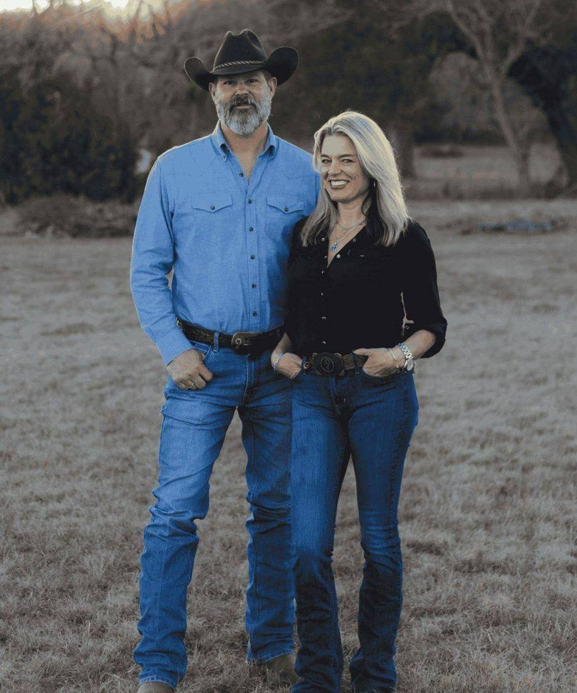
It does not get better.
Let's set up a quick discovery call. We'll walk the land, talk through your vision, and tell you the cost before we start.
Request an Estimate